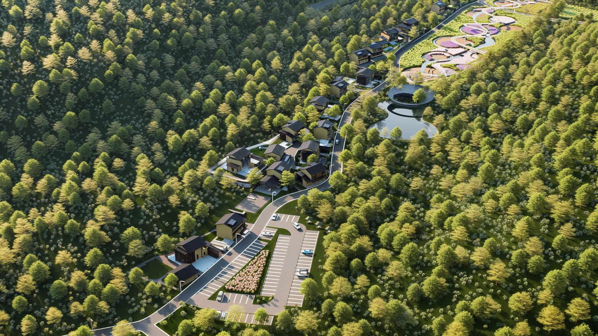

At COSMOS Design in Shanghai I worked on concept development and visualization for the Hebei Wudang Mountain Resort — a large hospitality project set into a forested mountain landscape. I integrated AI-based tools (Stable Diffusion, ComfyUI) into the conceptual design workflow, accelerating iteration between massing studies and atmospheric imagery.
在上海 COSMOS Design 实习期间，我参与了"河北武当山度假区"的概念设计与可视化——一个嵌入山林景观的大型文旅度假项目。我将 AI 工具（Stable Diffusion、ComfyUI）引入概念设计工作流，加速了体量研究与氛围图像之间的迭代。

Work produced during an internship at COSMOS Design, Shanghai. Images © COSMOS Design; shown for portfolio purposes with attribution. · 内容为在上海 COSMOS Design 实习期间所作，图像版权归 COSMOS Design 所有，经署名用于作品集展示。